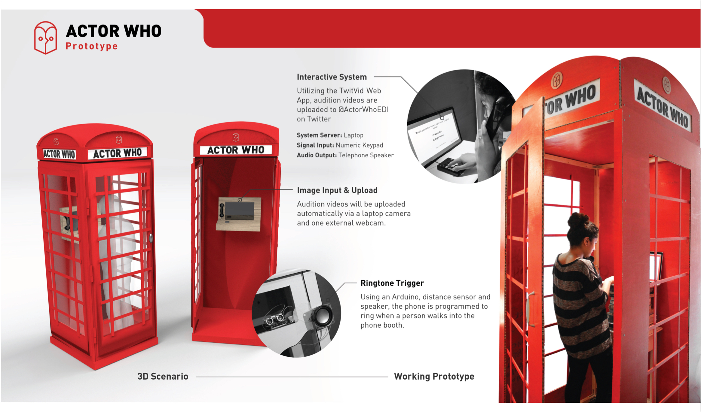

Transmedia Storytelling Using IoT Phone Booths and Twitter Polls
Role
Interaction Designer
Duration
1 Semester,
Spring 2017
Final Deliverables
Phone Booth Prototype
Actor Who is a transmedia story created for the BBC that captures the serendipitous spirit of the Edinburgh Festivals. By allowing both online and physical audiences to participate through viewin and voting on Twitter and auditioning in Edinburgh phone booths, the multi-platform experience lets participants work together to create the story. Actor Who allows anyone to live the story of the Edinburgh Festivals, regardless of where they are.
Processing was used to create the phone booth auditioning experience for the prototype. We had three weeks to build the booth and complete the software development. Sensor were also programmed to detect when a perfson walks into the phone booth to trigger a phone ring and begin the experience. Checkout github for the code used in the prototype
We tested our protoype phone booth experience at the Design with Data exhbition. Testing revealed some key insights for the next iteration of design and development. Some key insights include auditioners wishing they could view themselves while the recite the lines, they wish they had someone to audition with rather than just saying the lines like a monologue, many felt camera shy but were comfortable with recording voice.